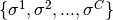

use sphinx.ext.mathbase
Machine Learning Applications¶
Clustering Ranked Data - Synthetic Data¶
-
example_clustering(C, S, F, N)¶
# Parameters:
# C::Int
# - number of clusters
# S::Int
# - sizes of the clusters
# F::Float64
# - spreading factors for the distributions
# N::Int
# - the problem size
# Return Values:
# None - saves the data to CSV files and runs the clustering script
# Notes: For Julia V0.4
# - the TmStruct and related code can be replaced with "now()"
# - the appropriate version number needs to be used to define $loc
As discussed in the main paper, we show clustering results on synthetic ranking data using Fourier features.
The data is generated by randomly choosing C permutations on Sn as the cluster centers .
For each cluster i, , we created S rankings by applying a random transposition on .
Therefore, the total number of rankings in our synthetic dataset is D = C x S.
Further, each ranking instance is represented as a function  on Sn .
In particular, we used the Mallow’s model with spread parameter F for each ranking.
Then, the Fourier transform is taken for each and the vectorized transform is used for the features.
These spectral features are used by the sparcl library to perform the sparse hierarchical clustering of the ranking data.
on Sn .
In particular, we used the Mallow’s model with spread parameter F for each ranking.
Then, the Fourier transform is taken for each and the vectorized transform is used for the features.
These spectral features are used by the sparcl library to perform the sparse hierarchical clustering of the ranking data.
Multi-Object Tracking¶
The goal of multi-object tracking is to map paths to real objects . This problem becomes difficult when two objects come close to one another or when data about them isn’t available, the match mapping from paths to objects becomes uncertain. A natural way to model this problem as a probability distribution over Sn because the true mapping isn’t always known. Generally, the probability distribution will spread as the time progresses between obeservations because the certainty of the matching decreases as the time between observations increases. Then, once there is another observation, the probability distribution will contract to match the observed data. However, the factorial nature of Sn makes this computationally intractable when the number of objects grows much beyond 10 or 11. The Fourier transform over Sn becomes useful because a function over Sn can be represented very accurately using a small number of the leading coefficients of the Fourier transform. Further, it has been shown that the type of observations seen in this problem can be applied directly to the lower dimensional representation of Sn . For more information, see Risi Kondor’s paper on Multi-Object Tracking here.
Disease Progresion¶
Another potential application to machine learning of the Fourier transform over Sn is in finding a disease progression from a dataset. Consider a problem where the features are some test results for a collection of subjects. An interesting, and medically signficant, question is in which order does the disease affect the tests results. Once again, it is clear that this problem can be approached using a probability distribution over Sn by representing each subject as such a distribution by sorting their tests results based on severity and then extrapolating probable variants of that original ranking. Unlike in the multi-object tracking case, the benifit of the taking the Fourier transform isn’t that it can be used a lower dimensional representation. In this case, the main advantage of using a Fourier representation is that it can identify when one patient is further along in the disease progression than another. This is because a subject who is further along in the disease progression has a probability distribution that is concentrated into a smaller coset within the coset that less advanced patient’s probability distribution is concentrated in. This “nested” behavior is observable in the Fourier transform because the coset structure is what the fast Fourier transform uses to become computationally efficient. Consequently, working in the Fourier domain can efficiently capture this kind of relationship between subjects.